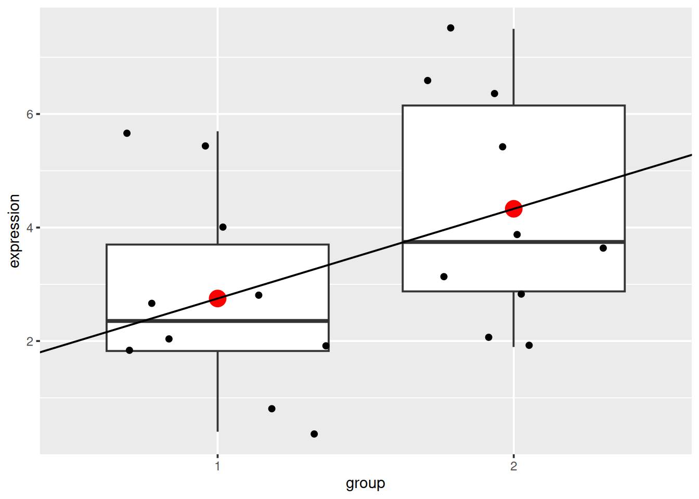

Chapter 2 Linear models
The objective of this chapter is to provide students with an intuitive understanding of how linear models are used in significance testing, and more specifically
- show how linear models are equivalent to a t-test
- demonstrate their flexibility.
2.1 Starting with a t-test
► Question
Load the gexp data from the rWSBIM2122 package (version >= 0.2.2)
as show below. It provides the log2 expression of a single gene of
interest measured in two groups, namely 1 and 2. Ignore the ID
column for now.
## expression group ID
## 1 2.7 1 1
## 2 0.4 1 2
## 3 1.8 1 3
## 4 0.8 1 4
## 5 1.9 1 5
## 6 5.4 1 6
## 7 5.7 1 7
## 8 2.8 1 8
## 9 2.0 1 9
## 10 4.0 1 10
## 11 3.9 2 1
## 12 2.8 2 2
## 13 3.1 2 3
## 14 2.1 2 4
## 15 1.9 2 5
## 16 6.4 2 6
## 17 7.5 2 7
## 18 3.6 2 8
## 19 6.6 2 9
## 20 5.4 2 10Using a t-test, compare the expression in groups 1 and 2. In particular, report the mean expression of each group, the log2 fold-change, the associated p-value and visualise the data.
► Solution

2.2 The linear model equivalence
Let’s now use linear regression and the lm() function to model the
expression in groups 1 and 2:
\[y = \beta_0 + \beta_1 \times x + \epsilon\]
where \(y\) is the expression we want to model and \(x\) represents the two groups that are generally encoded as 0 and 1. The expression above translates as follows:
- the expression in group 1 (i.e. when \(x = 0\)) is equal to \(\beta_0\) (the average expression of group 1);
- the expression in group 2 (i.e. when \(x = 1\)) is equal to \(\beta_0\) + \(\beta_1\) (the difference between group 1 and group 2).
We model this with
##
## Call:
## lm(formula = expression ~ group, data = gexp)
##
## Coefficients:
## (Intercept) group2
## 2.75 1.58An indeed, we see that
- the intercept corresponds to the mean in group 1, and
- the slope (
group2coefficient) of the model corresponds to the log2 fold-change and that, as expected, the mean of group 2 is intercept + slope.
We can visualise this linear model with:
p +
geom_point(data = data.frame(x = c(1, 2), y = c(2.75, 4.33)),
aes(x = x, y = y),
colour = "red", size = 5) +
geom_abline(intercept = coefficients(mod1)[1] - coefficients(mod1)[2],
slope = coefficients(mod1)[2])
Note that above, we need to subtract the slope from the intercept when plotting the linear model because groups 1 and 2 are encoded as 0 and 1 in the model, but plotted as 1 and 2 on the figure.
We can also extract the p-value associated with the coefficients:
##
## Call:
## lm(formula = expression ~ group, data = gexp)
##
## Residuals:
## Min 1Q Median 3Q Max
## -2.430 -1.305 -0.580 1.455 3.170
##
## Coefficients:
## Estimate Std. Error t value Pr(>|t|)
## (Intercept) 2.7500 0.6004 4.580 0.000232 ***
## group2 1.5800 0.8491 1.861 0.079187 .
## ---
## Signif. codes: 0 '***' 0.001 '**' 0.01 '*' 0.05 '.' 0.1 ' ' 1
##
## Residual standard error: 1.899 on 18 degrees of freedom
## Multiple R-squared: 0.1613, Adjusted R-squared: 0.1147
## F-statistic: 3.463 on 1 and 18 DF, p-value: 0.07919that are computer as
\[t_{score} = \frac{\beta_i - 0}{SE_{\beta_i}}\]
that has a t-distribution with n − 2 degrees of freedom if the null hypothesis is true. We use a t-test that tests whether the slope is different from 0:
- \(H_0\): \(\beta_i = 0\)
- \(H_1\): \(\beta_i \neq 0\)
The p-values for the slope \(\beta_1\) is slightly different due to the homoscedasticity assumption that wasn’t set in the t-test, which we can repeat:
##
## Two Sample t-test
##
## data: expression by group
## t = -1.8608, df = 18, p-value = 0.07919
## alternative hypothesis: true difference in means between group 1 and group 2 is not equal to 0
## 95 percent confidence interval:
## -3.363874 0.203874
## sample estimates:
## mean in group 1 mean in group 2
## 2.75 4.332.3 Paired t-test
► Question
The ID variable in the gexp data provides the unique sample
identifier: it is the sample in which an expression of 2.7 was
measured in group 1 and 3.9 in group 2.
Repeat the test comparing the gene expression between group 1 and group 2 using a paired t-test. Report the mean expression of each group, the log2 fold-change, the associated p-value and visualise the data.
Compare the p-values obtained in the paired and unpaired designs and explain the differences.
► Solution
This comparison can be replicated using a linar model1
\[y = \beta_0 + \beta_1 \times group + \beta_i \times ID_i + \epsilon\]
where the \(\beta_i\) coefficients will encode the relation between pairs of individuals. We model this with
##
## Call:
## lm(formula = expression ~ group + ID, data = gexp)
##
## Coefficients:
## (Intercept) group2 ID2 ID3 ID4 ID5
## 2.51 1.58 -1.70 -0.85 -1.85 -1.40
## ID6 ID7 ID8 ID9 ID10
## 2.60 3.30 -0.10 1.00 1.40which corresponds to the following model
\[ \begin{aligned} \operatorname{expression} &= \beta_{0} + \beta_{1}(\operatorname{group}_{\operatorname{2}}) + \beta_{2}(\operatorname{ID}_{\operatorname{2}}) + \beta_{3}(\operatorname{ID}_{\operatorname{3}})\ + \\ &\quad \beta_{4}(\operatorname{ID}_{\operatorname{4}}) + \beta_{5}(\operatorname{ID}_{\operatorname{5}}) + \beta_{6}(\operatorname{ID}_{\operatorname{6}}) + \beta_{7}(\operatorname{ID}_{\operatorname{7}})\ + \\ &\quad \beta_{8}(\operatorname{ID}_{\operatorname{8}}) + \beta_{9}(\operatorname{ID}_{\operatorname{9}}) + \beta_{10}(\operatorname{ID}_{\operatorname{10}}) + \epsilon \end{aligned} \]
The group2 coefficient still corresponds to the fold-change between
the two groups. The coefficients ID2 to ID10 correspond to the
respective differences between the average expression of ID1 and
ID2 to ID10.
avg_id <- (gexp2$expression_1 + gexp2$expression_2)/2
coefs_id <- avg_id[-1] - avg_id[1]
names(coefs_id) <- paste0("ID", 2:10)
coefs_id## ID2 ID3 ID4 ID5 ID6 ID7 ID8 ID9 ID10
## -1.70 -0.85 -1.85 -1.40 2.60 3.30 -0.10 1.00 1.40As above, a summary of the model will give us the statistical significance for the different coefficients.
##
## Call:
## lm(formula = expression ~ group + ID, data = gexp)
##
## Residuals:
## Min 1Q Median 3Q Max
## -1.510 -0.215 0.000 0.215 1.510
##
## Coefficients:
## Estimate Std. Error t value Pr(>|t|)
## (Intercept) 2.5100 0.6450 3.891 0.00367 **
## group2 1.5800 0.3890 4.062 0.00283 **
## ID2 -1.7000 0.8697 -1.955 0.08235 .
## ID3 -0.8500 0.8697 -0.977 0.35395
## ID4 -1.8500 0.8697 -2.127 0.06232 .
## ID5 -1.4000 0.8697 -1.610 0.14193
## ID6 2.6000 0.8697 2.989 0.01522 *
## ID7 3.3000 0.8697 3.794 0.00425 **
## ID8 -0.1000 0.8697 -0.115 0.91099
## ID9 1.0000 0.8697 1.150 0.27987
## ID10 1.4000 0.8697 1.610 0.14193
## ---
## Signif. codes: 0 '***' 0.001 '**' 0.01 '*' 0.05 '.' 0.1 ' ' 1
##
## Residual standard error: 0.8697 on 9 degrees of freedom
## Multiple R-squared: 0.912, Adjusted R-squared: 0.8142
## F-statistic: 9.328 on 10 and 9 DF, p-value: 0.001254► Question
Interpret the summary of mod2 computed above.
► Solution
2.4 Model generalisation
In the example above, we had two variables that influenced the gene expression, namely the group and the specific individual and we ended up with a model that included both of these2:
Any additional variables could be added to the model if deemed necessary.
► Question
We have measured the gene expression in cell lines U2OS and Jurkat
(defined as variable cell_line), each in the presence of drug A or B
(defined as variable drug). How would you define the model formula?
► Question
As above, we have measured the gene expression in cell lines U2OS and
Jurkat (defined as variable cell_line), each in the presence of drug
A or B (defined as variable drug). This time however, two operators
(defined as variable operator) have shared the work. How would you
define the model formula?
► Question
We have measured the gene expression in cell lines U2OS and Jurkat
(defined as variable cell_line), each in the presence of drug A, B
or C (defined as variable drug). How would you define the model
formula? Which coefficient would you include in the hypothesis test to
assess the drug effect?
2.5 Interactions between variables
Consider the following design: two plant genotypes, wild type and a mutant that shows some resistance to drought, that are grown, collected and analysed by RNA sequencing under normal, humid and dry conditions. The researchers that set up this experiment expect that the two genotypes will produce, for some key genes, different or even opposite responses in the extreme conditions: that the expression of some genes will increase in the mutant under dry conditions while they will decrease (or change to a lesser extend at least) under humid conditions.
Such situation require a new model formula syntax
which is equivalent to
Here, coefficients are estimated for genotype, condition and the
interaction between the two, and the model will test for
differences in condition slopes between the different
genotypes. These differences might even culminate in opposite signs.
2.6 Exercise
► Question
Load the lmdata data available in the rWSBIM2122 package (version
0.2.2 or later), that provides two variables, lmdata and lmannot,
describing a factorial design (2 factors, condition and cell_type
with 2 levels each) with gene expression for 5 genes and 12 samples.
## sample_1 sample_2 sample_3 sample_4 sample_5 sample_6 sample_7 sample_8
## gene_1 4.43952 4.76982 6.55871 5.07051 5.12929 6.71506 5.46092 3.73494
## gene_2 6.16031 6.04427 5.77766 6.71477 6.19914 5.21335 4.70136 3.52721
## gene_3 2.68748 3.31331 3.41889 5.15337 2.43093 6.25381 3.21323 4.70493
## gene_4 7.10784 5.87618 5.38807 5.23906 4.61059 5.58417 3.46921 10.33791
## gene_5 6.56233 4.83240 5.51878 4.13670 5.74783 5.17820 4.08734 6.21320
## sample_9 sample_10 sample_11 sample_12
## gene_1 4.31315 4.55434 6.22408 5.35981
## gene_2 2.93218 3.78203 2.97400 3.27111
## gene_3 3.44756 5.87813 3.41079 5.68864
## gene_4 8.41592 3.75378 5.19423 5.06669
## gene_5 4.64667 5.43150 4.86734 5.53540## sample condition cell_type
## 1 sample_1 ctrl A
## 2 sample_2 ctrl B
## 3 sample_3 ctrl A
## 4 sample_4 ctrl B
## 5 sample_5 ctrl A
## 6 sample_6 ctrl B
## 7 sample_7 cond A
## 8 sample_8 cond B
## 9 sample_9 cond A
## 10 sample_10 cond B
## 11 sample_11 cond A
## 12 sample_12 cond BAnalyse each gene with a linear model, defining an appropriate model formula, and interpret the results for each gene. You can visualise the data to help with the interpretation.
► Solution


2.7 Which model to use?
The same experimental design can be analysed using different models. Some are clearly not appropriate, such as the omission of the ID variable in the first example. Other cases aren’t that clear.
- If we return to the previous example for gene 3, we see that in both cases, we obtain significant results for the cell type coefficient, albeit with a much smaller p-value in the simpler model.
##
## Call:
## lm(formula = expression ~ condition + cell_type, data = x_i)
##
## Residuals:
## Min 1Q Median 3Q Max
## -1.59493 -0.22101 0.07057 0.31352 1.34557
##
## Coefficients:
## Estimate Std. Error t value Pr(>|t|)
## (Intercept) 3.3586 0.4002 8.393 1.51e-05 ***
## conditionctrl -0.5142 0.4621 -1.113 0.29460
## cell_typeB 2.0639 0.4621 4.466 0.00156 **
## ---
## Signif. codes: 0 '***' 0.001 '**' 0.01 '*' 0.05 '.' 0.1 ' ' 1
##
## Residual standard error: 0.8004 on 9 degrees of freedom
## Multiple R-squared: 0.7019, Adjusted R-squared: 0.6356
## F-statistic: 10.59 on 2 and 9 DF, p-value: 0.004314##
## Call:
## lm(formula = expression ~ condition * cell_type, data = x_i)
##
## Residuals:
## Min 1Q Median 3Q Max
## -1.59352 -0.22242 0.07198 0.31211 1.34698
##
## Coefficients:
## Estimate Std. Error t value Pr(>|t|)
## (Intercept) 3.357193 0.490117 6.850 0.000131 ***
## conditionctrl -0.511427 0.693130 -0.738 0.481685
## cell_typeB 2.066707 0.693130 2.982 0.017555 *
## conditionctrl:cell_typeB -0.005643 0.980234 -0.006 0.995547
## ---
## Signif. codes: 0 '***' 0.001 '**' 0.01 '*' 0.05 '.' 0.1 ' ' 1
##
## Residual standard error: 0.8489 on 8 degrees of freedom
## Multiple R-squared: 0.7019, Adjusted R-squared: 0.5901
## F-statistic: 6.278 on 3 and 8 DF, p-value: 0.01696The questions asked is slighly different. The coefficient cell_typeB
in the model without interaction tests for shared differences in the
two cell types by taking into account that there are two
conditions. In the model with interaction, the test focuses in the
cell type effect in the reference condition only.
- If we look at gene 5, we see that we miss out several significant effects if we use the simpler model, without interaction, because the simpler model doesn’t ask the right question.
##
## Call:
## lm(formula = expression ~ condition + cell_type, data = x_i)
##
## Residuals:
## Min 1Q Median 3Q Max
## -1.18410 -0.48934 0.01912 0.41084 1.22438
##
## Coefficients:
## Estimate Std. Error t value Pr(>|t|)
## (Intercept) 5.13882 0.41636 12.342 6.06e-07 ***
## conditionctrl 0.19913 0.48077 0.414 0.688
## cell_typeB -0.01715 0.48077 -0.036 0.972
## ---
## Signif. codes: 0 '***' 0.001 '**' 0.01 '*' 0.05 '.' 0.1 ' ' 1
##
## Residual standard error: 0.8327 on 9 degrees of freedom
## Multiple R-squared: 0.01884, Adjusted R-squared: -0.1992
## F-statistic: 0.08641 on 2 and 9 DF, p-value: 0.918##
## Call:
## lm(formula = expression ~ condition * cell_type, data = x_i)
##
## Residuals:
## Min 1Q Median 3Q Max
## -0.57907 -0.32745 -0.03921 0.36578 0.61935
##
## Coefficients:
## Estimate Std. Error t value Pr(>|t|)
## (Intercept) 4.5338 0.2775 16.338 1.98e-07 ***
## conditionctrl 1.4092 0.3924 3.591 0.00708 **
## cell_typeB 1.1929 0.3924 3.040 0.01607 *
## conditionctrl:cell_typeB -2.4201 0.5550 -4.361 0.00241 **
## ---
## Signif. codes: 0 '***' 0.001 '**' 0.01 '*' 0.05 '.' 0.1 ' ' 1
##
## Residual standard error: 0.4806 on 8 degrees of freedom
## Multiple R-squared: 0.7094, Adjusted R-squared: 0.6005
## F-statistic: 6.511 on 3 and 8 DF, p-value: 0.01536In high throughput experiments, where we test tens of thousands of genes, we can’t explore each gene separately with multiple models. The same model must be applied to all genes and the significance of coefficient(s) of interest is/are considered.
Solving this dilema isn’t a statistical but a scientific question. You will have to define the hypothesis that underlies the experiment3. If there are reasons to believe that an interaction effect is relevant (i.e. there are different effects in the two cell types), then the more complex model (with an interaction) is appropriate. If no such interaction is expected, then testing for it penalises your analysis. In other words it isn’t the complexity of the model that makes its quality, but its appropriateness for the studied design/effect.
Accumulating models and tests isn’t necessarily a solution either, as this leads to the accumulation of tests that would require additional adjustment for multiple testing.
2.8 Additional reading
We will be using linear models when analysing gene expression experiment, with concrete RNA sequencing example. The A guide to creating design matrices for gene expression experiments paper (Law et al. 2020Law, CW, K Zeglinski, X Dong, M Alhamdoosh, GK Smyth, and ME Ritchie. 2020. “A Guide to Creating Design Matrices for Gene Expression Experiments [Version 1; Peer Review: 2 Approved].” F1000Research 9 (1444). https://doi.org/10.12688/f1000research.27893.1.) is an excellent guide describing the basics of how to set up design and contrast matrices and great preparation to chapter 4.
Page built: 2023-10-04 using R version 4.3.1 Patched (2023-07-10 r84676)